CH12-009 — images
【空虚】満たそうとするほど空く｜埋め方が逆だ
ep
CH12
Script Viewer
snapshot
guide
台本
音声
サムネ
画像
CH12-009
画像
updated_at: 2026-01-12T23:40:25.903078Z
run_id:
CH12-009
CH12-009
夜の空虚感と問いかけ
CH12-009
心の自然な揺らぎ
CH12-009
感覚からの逃避行動
CH12-009
逆効果と物語の強化
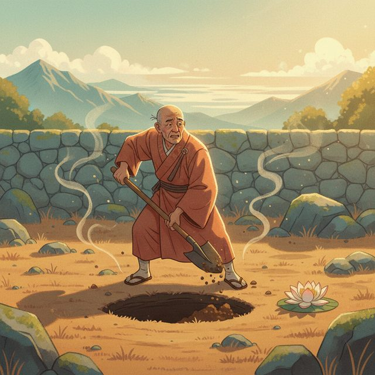
CH12-009
穴を埋める老人の寓話
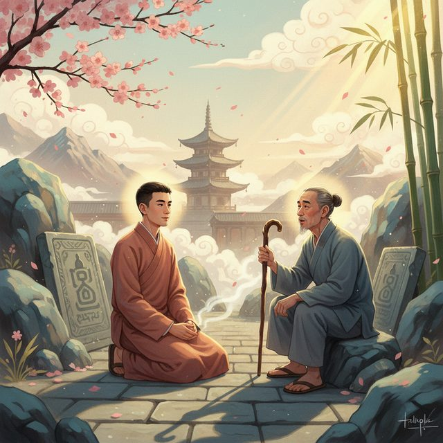
CH12-009
修行者の指摘
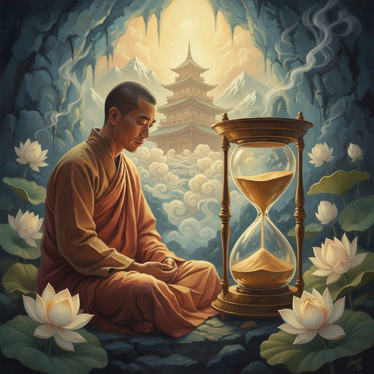
CH12-009
寓話の心への適用
CH12-009
仏教の縁起の説明
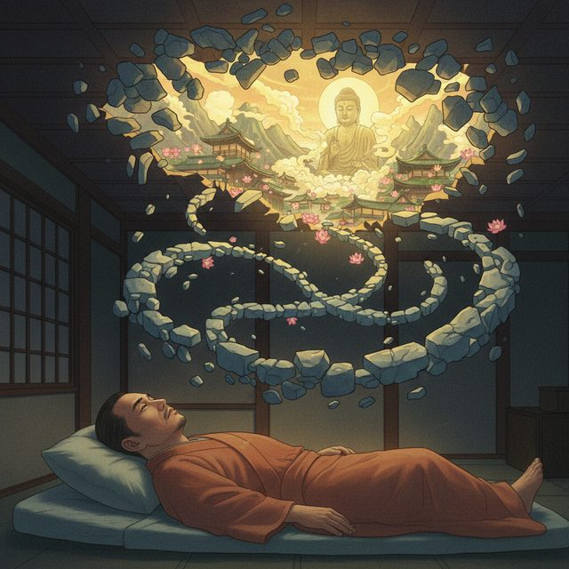
CH12-009
思考が穴を広げる循環
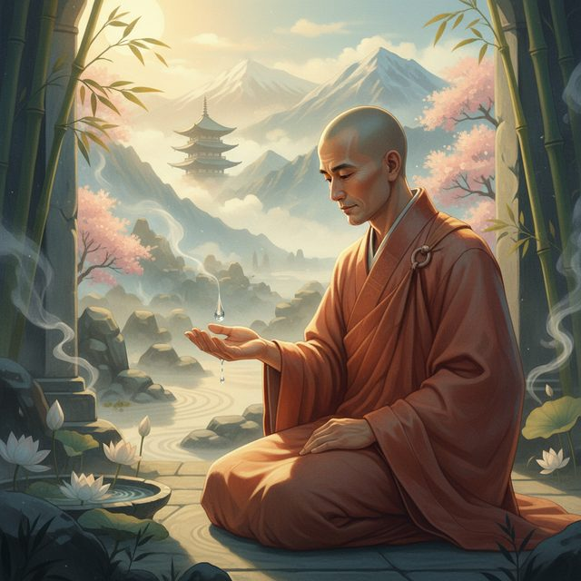
CH12-009
反応パターンこそ問題
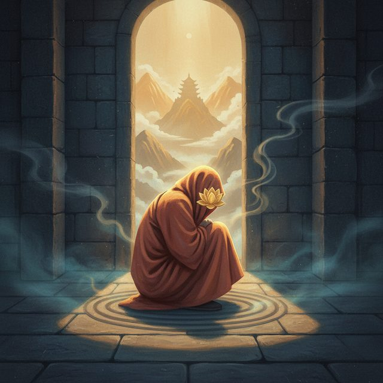
CH12-009
何もしないことの不安
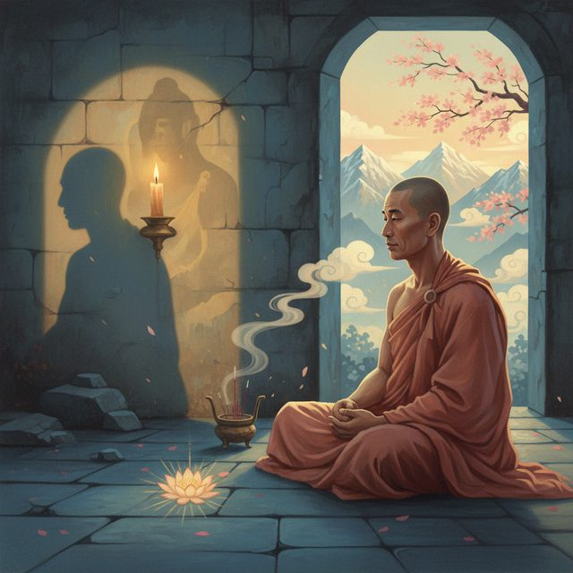
CH12-009
気づきへの第一歩
CH12-009
埋めるのをやめる核心
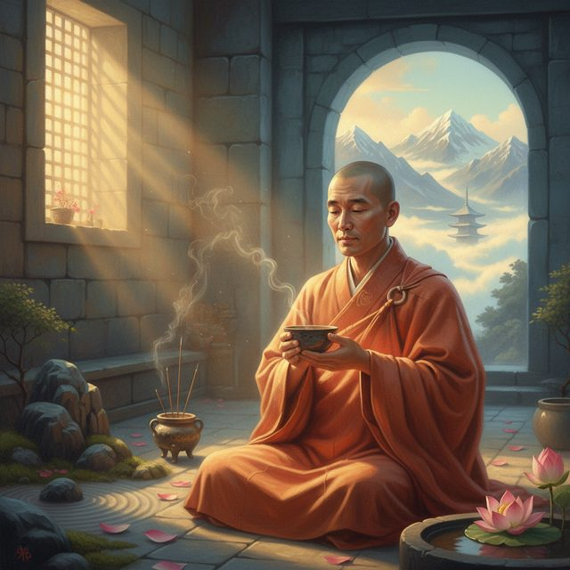
CH12-009
受容と日常的な実践
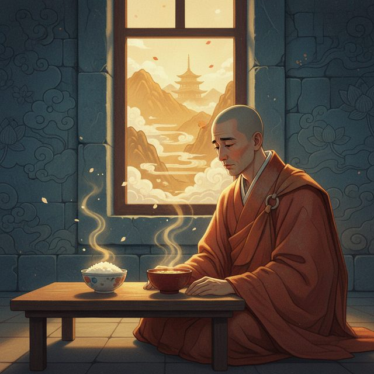
CH12-009
食卓での寂しさと感覚
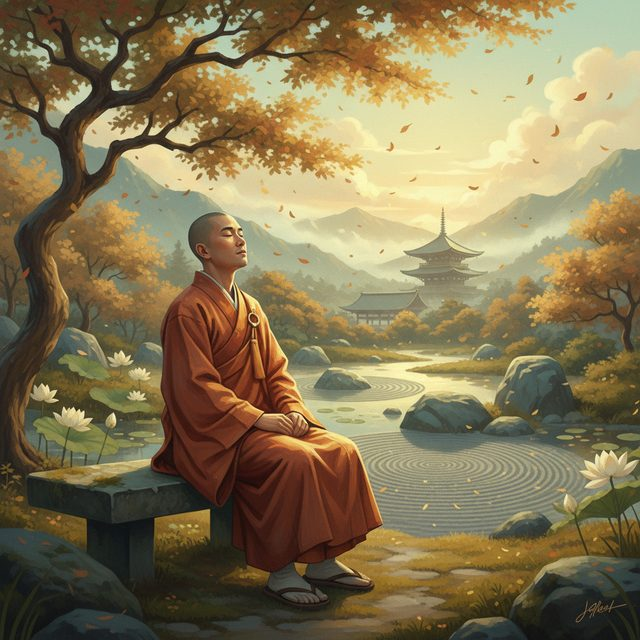
CH12-009
感覚全体を受け入れる
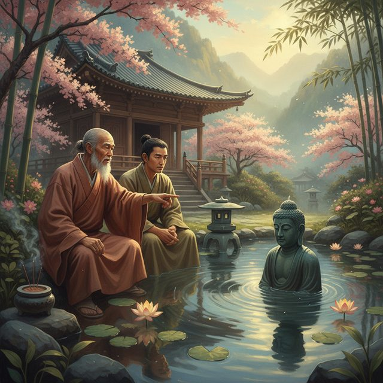
CH12-009
池の水を澄ます寓話
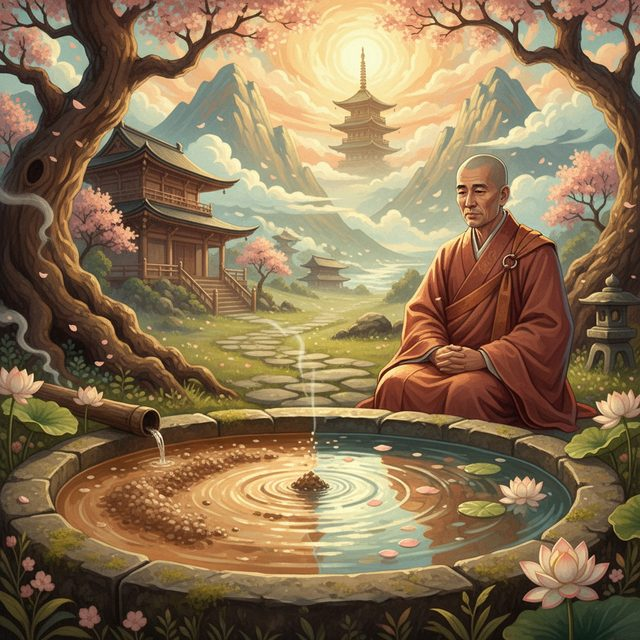
CH12-009
逃避と受容の違い
CH12-009
真の受容とは何か
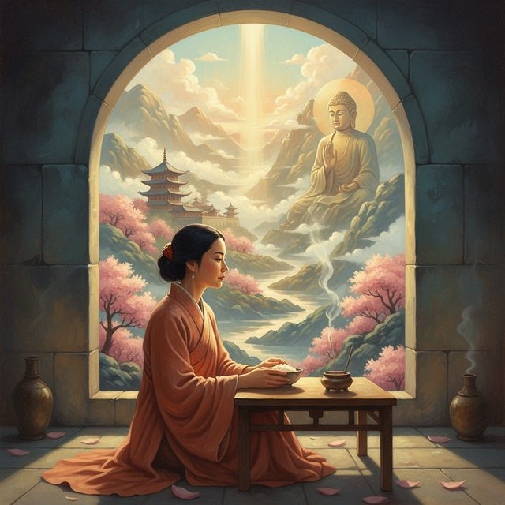
CH12-009
寂しさを味わう実践
CH12-009
五呼吸の方法の紹介
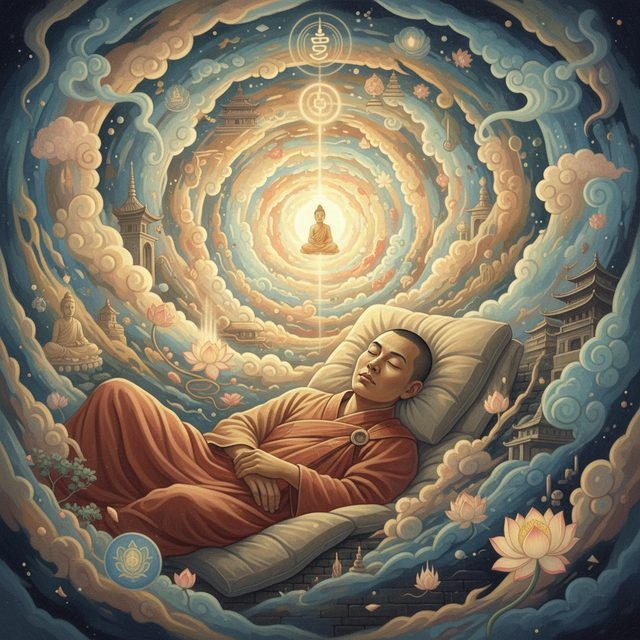
CH12-009
夜の思考の渦
CH12-009
呼吸が「今ここ」に連れ戻す
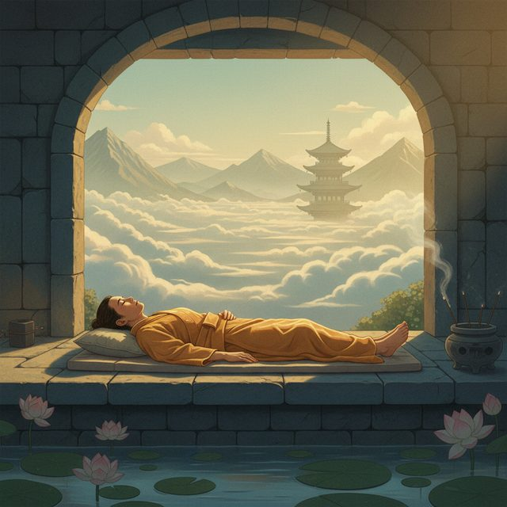
CH12-009
第一の呼吸：流れを感じる
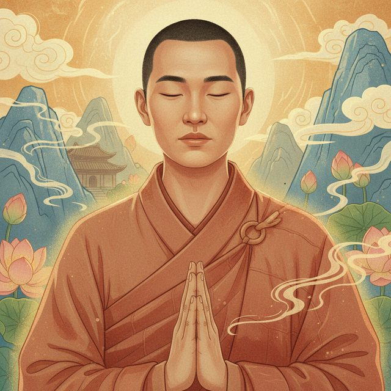
CH12-009
第二の呼吸：部位に意識を向ける
CH12-009
第三の呼吸：間を感じる
CH12-009
第四の呼吸：評価せず観察
CH12-009
第五の呼吸：手放し解放
CH12-009
三つのコツ
CH12-009
実践による意識の変化
CH12-009
次章へのつなぎ
CH12-009
病院帰りの空虚と豊かさ
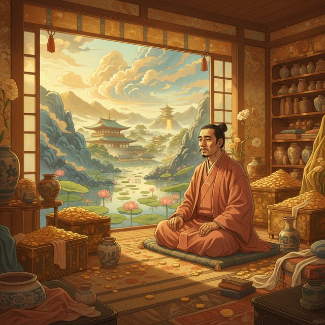
CH12-009
裕福な男の寓話
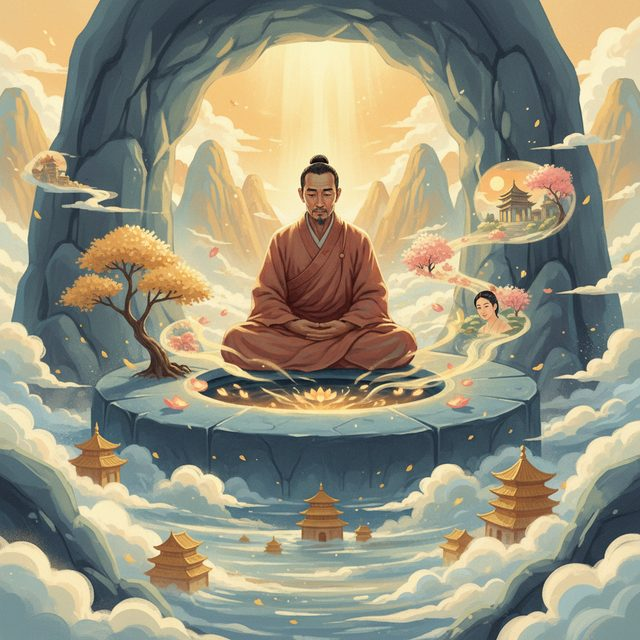
CH12-009
穴を見つめる変化
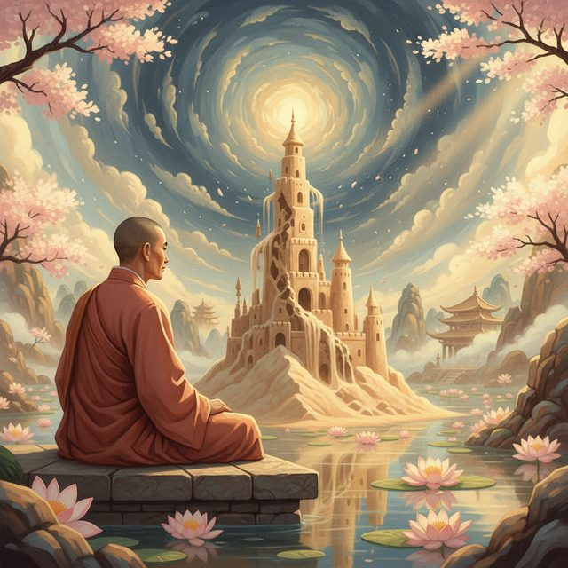
CH12-009
空の概念の説明
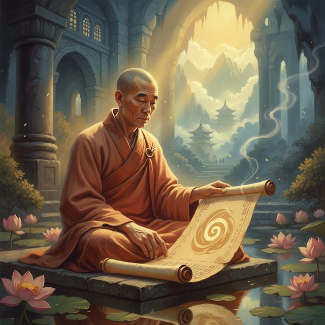
CH12-009
余白としての空虚
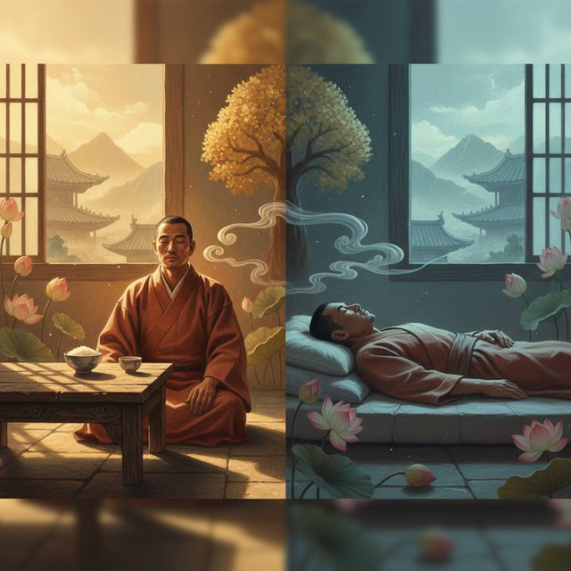
CH12-009
日常での小さな実践例
CH12-009
停止と内省の機会
CH12-009
心のメッセージに耳を傾ける
CH12-009
締めの言葉
CH12-009
まとめと今夜の実践への誘い